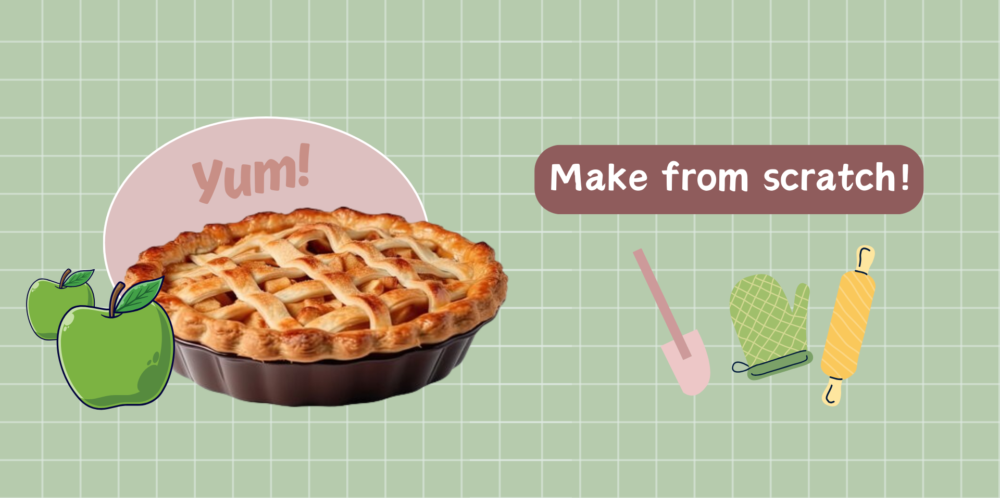

APPLE PIE

An apple pie is a fruit pie in which the principal filling is apples. Apple pie is often served with whipped cream, ice cream ("apple pie à la mode"), custard or cheddar cheese. It is generally double-crusted, with pastry both above and below the filling; the upper crust may be solid or latticed (woven of crosswise strips). The bottom crust may be baked separately ("blind") to prevent it from getting soggy. Deep-dish apple pie often has a top crust only.
This recipe will guide you through every step, from making the flaky crust to the cinnamon-spiced filling, resulting in a dessert that's a favorite for a reason. Nothing beats a classic apple pie made from scratch!
INGREDIENTS
(for 8 servings)
FILLING
- 3/4 cup sugar (150 g)
- 2 tablespoons flour
- 2 1/2 lb (1 kg) granny smith apple (cored, sliced, and peeled)
- 1/2 teaspoon salt
- 1 egg, beaten
- 1 tablespoon sugar
- 1/2 lemon
- 1 teaspoon cinnamon
- 1/4 teaspoon nutmeg
PIE DOUGH
- 8 tablespoons ice water (or as needed)
- 1 1/2 sticks butter (cold and cubed)
- 2 1/2 cups flour (315 g)
- 1 teaspoon salt
METHOD
- In a medium-sized bowl, add the flour and salt. Mix with fork until combined.
- Add in cubed butter and break up into flour with a fork. Mixture will still have lumps about the size of small peas.
- Gradually add the ice water and continue to mix until the dough starts to come together. You may not need all of the water, but if the dough is too dry then add more.
- Work the dough together with your hands and turn out onto a surface. Work into a ball and cover with cling wrap. Refrigerate.
- Peel the apples, then core and slice.
- In a bowl, add the sliced apples, sugar, flour, salt, cinnamon, nutmeg, and juice from the lemon.
- Mix until combined and all apples are coated. Refrigerate.
- Preheat the oven to 375°F (200°C).
- On a floured surface, cut the pie dough in half and roll out both halves until round and about 1/8-inch (3 mm) thick.
- Roll the dough around the rolling pin and unroll onto a pie dish making sure the dough reaches all edges. Trim extra if necessary.
- Pour in apple filling mixture and pat down.
- Roll the other half of the dough on top.
- Trim the extra dough from the edges and pinch the edges to create a crimp. Make sure edges are sealed together.
- Brush the pie with the beaten egg and sprinkle with the sugar.
- Cut four slits in the top of the pie to create a vent.
- Bake pie for 50-60 minutes or until the crust is golden brown and no greyish or undercooked pastry remains.
- Allow to cool completely before slicing.
- ENJOY!